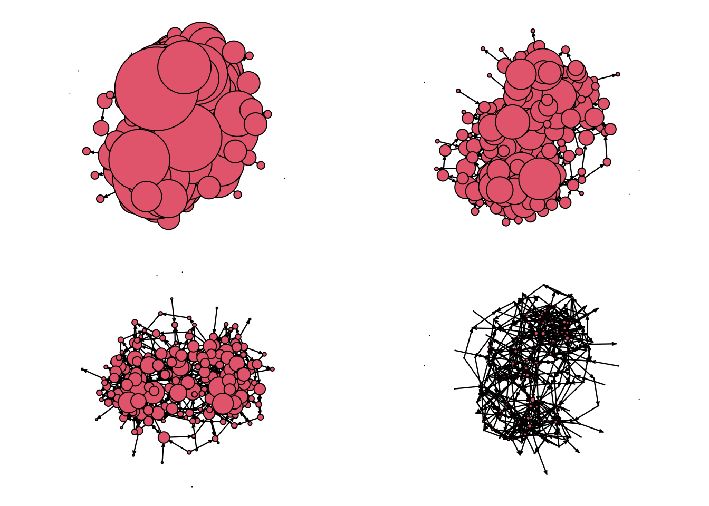
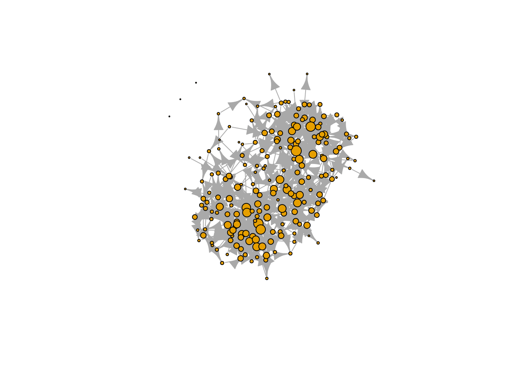
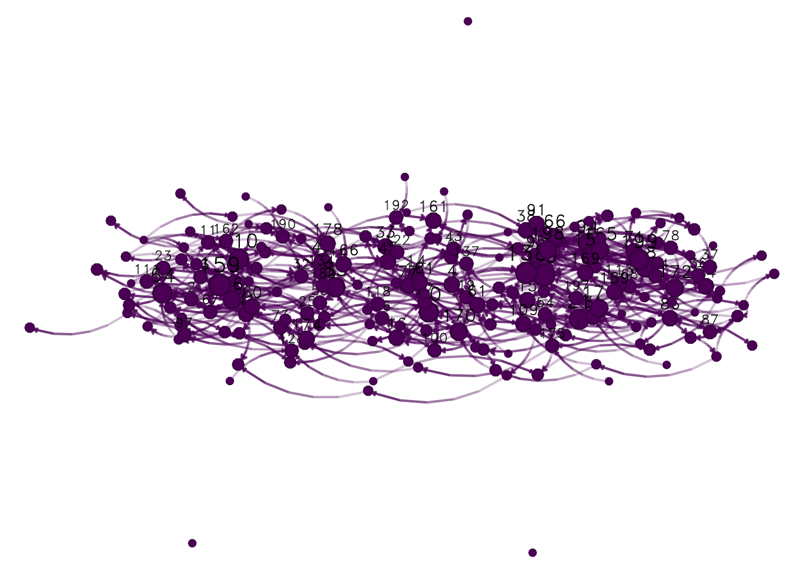

8.3 Visualizing the network
We will focus on three different attributes that we can use for this visualization: Node size, node shape, and node color. While there are no particular rules, some ideas you can follow are:
Node size Use it to describe a continuous measurement. This feature is often used to highlight important nodes, e.g., using one of the many available degree measurements.
Node shape Shapes can be used to represent categorical values. A good figure will not feature too many of them; less than four would make sense.
Node color Like shapes, colors can be used to represent categorical values, so the same idea applies. Furthermore, it is not crazy to use both shape and color to represent the same feature.
Notice that we have not talked about layout algorithms. The R packages to build graphs usually have internal rules to decide what algorithm to use. We will discuss that later on. Let’s start by size. Finding the right scale can be somewhat difficult. We will draw the graph four times to see what size would be the best:
# Sized by indegree
net_sim %v% "indeg" <- degree(net_sim, gmode = "digraph")
# Preparing the graphical device to hold four nets.
# This line sets a 2 x 2 viz device and stores the
# original value. We will use the `op` object to reset
# the configugarion
op <- par(mfrow = c(2, 2), mai = c(.1, .1, .1, .1))
gplot(net_sim, vertex.cex = (net_sim %v% "indeg") * 2)
gplot(net_sim, vertex.cex = net_sim %v% "indeg")
gplot(net_sim, vertex.cex = (net_sim %v% "indeg")/2)
gplot(net_sim, vertex.cex = (net_sim %v% "indeg")/10)
If we were using igraph, setting the size can be easier thanks to the netdiffuseR
R package. Let’s start by converting our network to an igraph object with the
R package intergraph
##
## Attaching package: 'igraph'## The following objects are masked from 'package:sna':
##
## betweenness, bonpow, closeness, components, degree, dyad.census,
## evcent, hierarchy, is.connected, neighborhood, triad.census## The following objects are masked from 'package:network':
##
## %c%, %s%, add.edges, add.vertices, delete.edges, delete.vertices,
## get.edge.attribute, get.edges, get.vertex.attribute, is.bipartite,
## is.directed, list.edge.attributes, list.vertex.attributes,
## set.edge.attribute, set.vertex.attribute## The following objects are masked from 'package:stats':
##
## decompose, spectrum## The following object is masked from 'package:base':
##
## union# Converting the network object to an igraph object
net_sim_i <- asIgraph(net_sim)
# Plotting with igraph
plot(
net_sim_i,
vertex.size = netdiffuseR::rescale_vertex_igraph(
vertex.size = V(net_sim_i)$indeg,
minmax.relative.size = c(.01, .1)
)
)
We could also have tried netplot, which should make things easier (and prettier):
## Loading required package: grid##
## Attaching package: 'netplot'## The following object is masked from 'package:igraph':
##
## ego